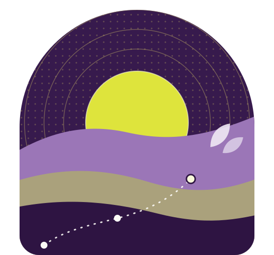
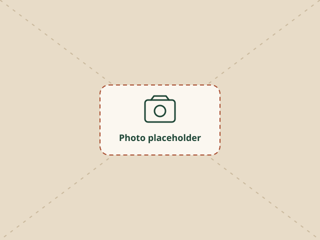

Gender justice programs
We design and implement programs that advance gender justice in practice.
Armenian women-led non-profit
Social Justice Innovations (SJI) is a non-profit public organization led by women and working with women in climate-vulnerable communities.

About us
Social Justice Innovations (SJI) is an Armenian women-led non-profit public organization established to advance social justice, dignity, inclusion and resilience.
We do this through gender and green mainstreaming: bringing gender equality and environmental justice into the heart of social policy and community action.

Led by women, working with women.
Gender equality at the centre of every program, analysis and recommendation.
Connecting climate and environmental risks with social justice, livelihoods and wellbeing.
What guides us
Our statutory objectives include:
Reducing socio-economic inequality, multidimensional poverty and digital exclusion.
Empowering women, young people and other vulnerable groups.
Conducting research, policy analysis and advocacy.
Supporting community development.
Promoting green communities and environmental justice.
Promoting a just transition that prevents poverty and unemployment risks.
Green justice & social resilience
SJI acts as a green justice and social resilience advocate, working with low-income and otherwise disadvantaged women in climate-vulnerable communities to:
Step 1
Identify the lived impacts of climate and environmental risks on health, livelihoods, care responsibilities and access to services.
Step 2
Strengthen women's collective voice through meaningful participation in decision-making.
Step 3
Translate community knowledge into advocacy and policy recommendations.
What we do
Our team specializes in designing and implementing gender justice programs.
We design and implement programs that advance gender justice in practice.
Practical toolkits that support enhanced access to:
Get involved
Whether you are part of a community group, an organization, a research institution or a donor, or simply share our values, we would be glad to hear from you.
Write to us
info@example.org